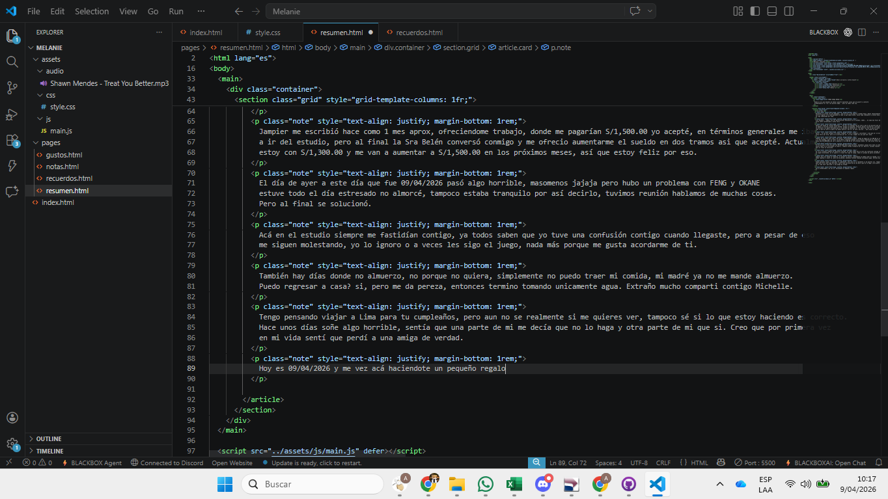

Silly boy
Recuerdas la ultima vez que hablamos.. ese día fui a una empresa llamada Feng y Okane (Honestamente son un dolor de cabeza) ese día regresé a mi casa pensando en todo lo que habia hecho, nunca supe realmente si estuvo bien, pero desde ese día, hasta hoy me sigo lamentando por todo.
Días despues... empecé con las declaraciones mensuales en el estudio, sabes... es algo muy facil de hacer, honestamente estoy aprendiendo mucho sobre contablidad y estoy feliz
Sabías que Sandy me intentó denunciar... fue por un problema que yo tuve y que tu me dijiste que no lo intente. Le empecé a escribir porque nunca entendí porque no bloqueba, entonces decidí escribirle y escribirle.... hasta el punto que ella le escribió a mi padre diciendo que si no paraba me denunciaría. "Al menos eos fue lo que me contó mi papá" tiempo después descubrí que todo lo que me contó mi padre fue medio mentira. Aun así me sentí muy mal... pero bueno ya pasó
Zaira... se fue del estudio a un mejor trabajo, se fue a trabajar a SurtiFood ? creo que así se escribe, esto fue algo reciente estoy feliz por ella, pero se le extraña por acá, le van a pagar más asi que está bien.
Jampier me escribió hace como 1 mes aprox, ofreciendome trabajo, donde me pagarían S/1,500.00 yo acepté, en términos generales me iba a ir del estudio, pero al final la Sra Belén conversó conmigo y me ofrecio aumentarme el sueldo en dos tramos asi que acepté. Actualmente estoy con S/1,300.00 y me van a aumentar a S/1,500.00 en los próximos meses, así que estoy feliz por eso.
El día de ayer a este día que fue 09/04/2026 pasó algo horrible, masomenos jajaja pero hubo un problema con FENG y OKANE estuve todo el día estresado no almorcé, tampoco estaba tranquilo por así decirlo, tuvimos reunión hablamos de muchas cosas. Pero al final se solucionó.
Acá en el estudio siempre me fastidían contigo, ya todos saben que yo tuve una confusión contigo cuando llegaste, pero a pesar de eso me siguen molestando, yo lo ignoro o a veces les sigo el juego, nada más porque me gusta acordarme de ti.
También hay días donde no almuerzo, no porque no quiera, simplemente no puedo traer mi comida, mi madré ya no me mande almuerzo. Puedo regresar a casa? si, pero me da pereza, entonces termino tomando unicamente agua. Extraño mucho comparti contigo Michelle.
Tengo pensando viajar a Lima para tu cumpleaños, pero aun no se realmente si me quieres ver, tampoco sé si lo que estoy haciendo es correcto. Hace unos días soñe algo horrible, sentía que una parte de mi me decía que no lo haga y otra parte de mi que si. Creo que por primera vez en mi vida sentí que perdí a una amiga de verdad.
Hoy es 09/04/2026 y me vez acá haciendote un pequeño regalo, probablemente escriba más cosas por el paso de los días o tal vez no. Solo quiero que sepas que te aprecio mucho, y que aunque no hablemos, siempre te voy a tener de recuerdo.

Tu sabías que el SIS se paga todos los meses verdad ? Pues me pasó una tragedia y justo en semana Santa decido darme la vida rica :v y bueno se me vencieron varios SIS, te juro que no sabia como decirle a la Sra Belén , pero al final pasó lo que pasó. Lo bueno de todo es que ya recuperé un SIS y mañana lo estaré pagando.